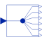

DeMultiplex6DeMultiplexer block for six output connectors |

|
Information
This information is part of the Modelica Standard Library maintained by the Modelica Association.
The input connector is split into six output connectors. Note, that the dimensions of the output connector signals have to be explicitly defined via parameters n1, n2, n3, n4, n5 and n6.
Parameters (6)
| n1 |
Value: 1 Type: Integer Description: Dimension of output signal connector 1 |
|---|---|
| n2 |
Value: 1 Type: Integer Description: Dimension of output signal connector 2 |
| n3 |
Value: 1 Type: Integer Description: Dimension of output signal connector 3 |
| n4 |
Value: 1 Type: Integer Description: Dimension of output signal connector 4 |
| n5 |
Value: 1 Type: Integer Description: Dimension of output signal connector 5 |
| n6 |
Value: 1 Type: Integer Description: Dimension of output signal connector 6 |
Connectors (7)
| u |
Type: RealInput[n1 + n2 + n3 + n4 + n5 + n6] Description: Connector of Real input signals |
|
|---|---|---|
| y1 |
Type: RealOutput[n1] Description: Connector of Real output signals 1 |
|
| y2 |
Type: RealOutput[n2] Description: Connector of Real output signals 2 |
|
| y3 |
Type: RealOutput[n3] Description: Connector of Real output signals 3 |
|
| y4 |
Type: RealOutput[n4] Description: Connector of Real output signals 4 |
|
| y5 |
Type: RealOutput[n5] Description: Connector of Real output signals 5 |
|
| y6 |
Type: RealOutput[n6] Description: Connector of Real output signals 6 |